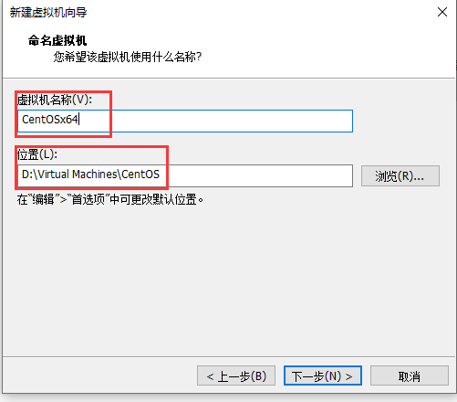
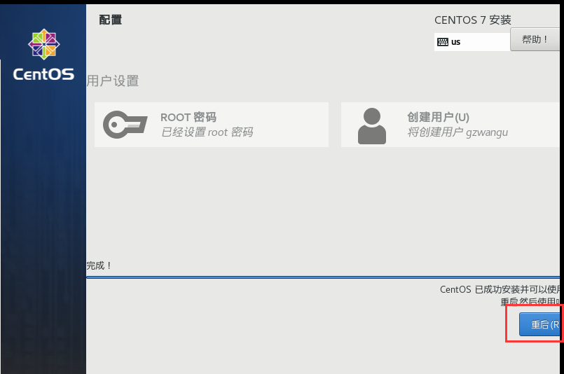
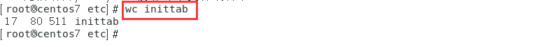
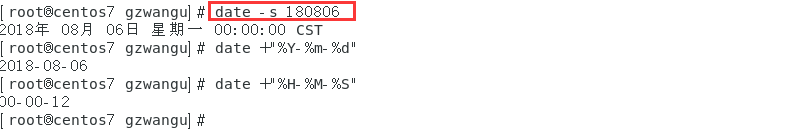
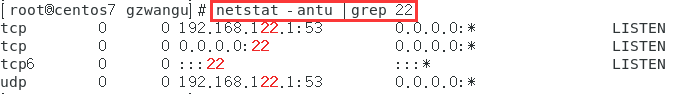

南京大学软件学院2021级研一《高级Linux系统》课程实验
实验一
1、按以下磁盘分区规划安装CentOS 7.x：
/分区：40GB；
/boot分区：1GB；
SWAP分区：2GB。
2、配置FirewallD防火墙，在public区域中添加http服务，5801端口（TCP协议），并保证firewalld服务是启动的。
CentOS系统安装
宿主机：Windows 10 64位家庭中文版；Intel(R) Core(TM) i7-7500U CPU @ 2.70GHz 2.90 GHz；12.0 GB RAM；硬盘 1T
虚拟机：VMware Workstation 16 Pro
ISO镜像：CentOS-7-x86_64-DVD-2009
安装CentOS-7之前，需要创建新的虚拟机
选择自定义(高级)，点击下一步
选择虚拟机硬件兼容性，默认最新
在新建虚拟机安装向导里选择稍后安装操作系统
客户机操作系统选择Linux，版本选择CentOS 7 64位
给虚拟机起名，并选择安装位置

根据电脑CPU性能为虚拟机选择处理器数量和每个处理器的内核数
设置虚拟机内存大小，这里设置4GB
选择虚拟机与真机网络连接方式，选择使用网络地址转换(NAT)
选择I/O控制器类型，默认即可
默认选择SCSI(S)磁盘类型
选择使用哪个磁盘，创建新虚拟磁盘

选择磁盘大小，设置50GB，不要勾选立即分配所有磁盘空间
指定存储磁盘的文件，默认即可
完成创建虚拟机向导
打开新创建的虚拟机里的编辑虚拟机设置，找到CD/DVD(IDE)一栏，点击使用ISO镜像文件，把本地光盘镜像挂载上
点击开启此虚拟机，开始安装CentOS 7系统
选择第一项Install CentOS 7，直接安装CentOS 7等待即可
选择安装语言，简体中文
安装信息摘要
时间和日期设置为亚洲地区，上海城市

选择汉语键盘布局，点击完成即可
软件选择GNOME桌面
点击安装位置，选择我要配置分区，点击完成
点击加号，选择/boot，给boot分区分1GB，点击添加挂载点
设置SWAP分区2GB
设置/分区40GB
按照上面步骤都分区完毕，点击完成，弹出更改摘要，点击接受更改
点击网络和主机名，先打开网卡获取到IP地址，再更改主机名
最后点击开始安装
设置ROOT密码
创建用户
等待系统安装完毕重启系统即可

初始设置里接受许可证，完成配置
安装成功界面如下
FirewallD防火墙配置
配置FirewallD防火墙，依次点击应用程序—>杂项—防火墙
配置选择永久，区域选择public，服务里勾选http
点击端口—>添加，配置5801端口（TCP协议）
重启后查看防火墙状态、5801端口和public区域的详细信息
1 | systemctl status firewalld |
最后设置防火墙开机启动
1 | systemctl enable firewalld |
实验二
第三章-字符界面操作基础
1、使用shutdown命令设定在30分钟之后关闭计算机。
- shutdown -h +30

2、使用命令将“cat /etc/inittab”设置为别名name，然后再取消别名。
- alias name=’cat /etc/inittab’
- unalias name
3、使用echo命令和输出重定向创建文本文件/root/nn，内容是Hello，然后再使用追加重定向输入内容为Linux。
- echo Hello> /root/nn
- echo Linux >> /root/nn
4、使用管道方式分页显示/var目录下的内容。
- ls /var |more
5、使用cat命令显示文件/etc/passwd和/etc/shadow，只有正确显示第一个文件时才显示第二个文件。
- cat /etc/passwd && cat /etc/shadow
6、使用vi编辑器创建文本文件/root/v，文件内容为hell，最后保存退出。
- vi /root/v
- a
- hell
- “ESC” Enter
- ZZ
系统默认进入到命令模式，按字母键“a”进入插入模式
在插入模式下进行文本编辑，内容为hell
编辑完成，按“Esc”键回到命令模式，再输入ZZ保存退出。
第四章-目录和文件管理
1、使用命令切换到/etc目录，并显示当前工作目录路径。
- cd /etc
- pwd
2、使用命令显示/root目录下所有文件目录的详细信息，包括隐藏文件。
- ls -al /root
3、使用命令创建空文件/root/ab，并将该文件的时间记录更改为2019年8月8日8点8分。
- touch /root/ab
- touch -t 201908080808 /root/ab
4、使用命令创建具有默认权限为744的目录/root/ak，然后将/etc/inittab文件复制到该目录中，最后再将该目录及其目录下的文件一起删除。
- mkdir -m 744 /root/ak
- cp /etc/inittab /root/ak
- rm -rf /root/ak
5、统计文件/etc/inittab的行数、单词和字节数。
- wc /etc/inittab

6、使用命令创建/root/a文件的硬链接文件/root/b和软链接文件/root/c。
- ln /root/a /root/b
- ln -s /root/a /root/c
先创建空文件/root/a，再创建/root/a文件的硬链接文件/root/b和软链接文件/root/c。a和b文件inode相同，链接数2为硬链接文件，c文件inode不同于a、b，链接数1为软链接文件。
第五章-Linux常用操作命令
1、使用命令一次3行显示/etc/inittab文件内容。
- more -3 /etc/inittab
2、使用cat命令创建mm.txt文件，文件内容为Hello。
- cat >mm.txt<<EOF
- Hello
- EOF
3、使用命令查找/etc目录下的文件fstab。
- find /etc -name fstab
4、使用命令将当前计算机的主机名修改为IT。
- hostname IT
5、使用命令显示公元2018年8月的月历。
- cal 8 2018
6、使用命令将当前计算机时间设置为2018年8月6日。
- date -s 180806

7、使用命令显示/etc/fstab文件的文件类型。
- ll /etc/fstab
8、使用命令显示/root目录的磁盘占用量。
- du -h /root
实验三
第七章-用户和组群账户管理
1、使用命令创建用户账户zhangsan，并设置其密码为111111，设置用户名全称为“张三”。
- useradd zhangsan
- passwd zhangsan
- usermod -c 张三 zhangsan
2、使用命令修改用户账户zhangsan的UID为1700，其Shell类型为/bin/ksh。
- usermod -u 1700 zhangsan
- usermod -s /bin/ksh zhangsan
3、使用命令删除用户账户zhangsan，并且在删除该用户的同时一起删除其主目录。
- userdel -r zhangsan
4、使用命令创建组群group1，并且在创建时设置其GID为1800。
- groupadd -g 1800 group1
5、使用命令修改组群group1的新组群名称为“shanghai”。
- groupmod -n shanghai group1
第八章-磁盘分区和文件系统管理
1、对硬盘上的剩余空间进行分区，创建两个逻辑驱动器，容量分别为1GB和3GB。
(1)查看磁盘分区情况：
- fdisk -l
(2)创建扩展分区，将剩余磁盘空间全都划分给扩展分区：
- fdisk /dev/sda
(3)创建两个逻辑分区，容量分别为1GB和3GB：

(4)使用partprobe命令手动将分区信息同步到内核：
(5)格式化逻辑分区（非必要）：

2、对1GB分区创建文件系统为xfs，并将其以只读的方式挂载到/mnt/kk目录中。
- mkfs -t xfs /dev/sda5 #若上步格式化成ext4，需要强制格式化使用-f
- mount -o ro /dev/sda5 /mnt/kk
3、修改/etc/fstab文件，使得1GB分区开机时自动挂载到/mnt/kk目录中。
- blkid /dev/sda5
- nano /etc/fstab
- UUID={UUID} /mnt/kk xfs defaults 1 2
4、在计算机上添加交换文件，文件大小为1GB。
- dd if=/dev/zero of=/swapfile bs=1024 count=1048576 #1024*1024
- chown root:root /swapfile #不加权限可能会报错
- chomd 0600 /swapfile
- mkswap /swapfile
- swapon /swapfile
- nano /etc/fstab
- /swapfile swap swap defaults 0 0
第九章-软件包管理
1、使用rpm命令安装bind-chroot软件包，安装完毕后查看该软件包的描述信息。
依次安装bind-license-9.11.4-26.P2.el7_9.7.noarch.rpm
bind-libs-lite-9.11.4-26.P2.el7_9.7.x86_64.rpm
bind-libs-9.11.4-26.P2.el7_9.7.x86_64.rpm
bind-9.11.4-26.P2.el7_9.7.x86_64.rpm
bind-chroot-9.11.4-26.P2.el7_9.7.x86_64.rpm
- rpm -ivh bind-chroot-9.11.4-26.P2.el7_9.7.x86_64.rpm
2、使用rpm命令查询crontabs软件包所包含的文件列表。
- rpm -ql crontabs
3、使用rpm命令查询/etc/crontab文件属于哪个软件包。
- rpm -qf /etc/crontab
4、在Linux系统上修改软件仓库为https://mirrors.nju.edu.cn。
1 | sudo sed -e 's|^mirrorlist=|#mirrorlist=|g' \ |

5、使用yum命令安装samba软件包。
- yum install samba
6、使用yum命令删除bind软件包。
- yum remove bind
7、归档/root/abc目录，生成文件为/root/abc.tar。
- tar cvf /root/abc.tar /root/abc
8、使用tar命令调用gzip压缩程序将/root/abc目录压缩成/root/abc.tar.gz文件。
- tar zcvf /root/abc.tar.gz /root/abc
实验四
第十章-权限和所有者
1、使用文字设定法对/root/ab文件设置权限，所有者为读取、写入和执行权限，同组用户为读取和写入权限，而其他用户没有任何权限。
- chmod u=rwx,g=rw,o=- /root/ab
2、使用数字设定法设置/root/ab文件的权限，所有者只拥有读取和写入权限。
- chmod 600 /root/ab
3、将/root/ab文件的所有者更改为用户zhangsan。
- chown zhangsan /root/ab
第十一章-Linux日常管理和维护
1、使用ps命令显示root用户的进程。
- ps -u root
2、强制杀死crond进程。
- ps -ef | grep crond
- kill -9 1249

3、修改/etc/crontab文件实现自动化，使得每星期一的11:00将/boot目录及其子目录和文件复制到/root/abc目录下。
- nano /etc/crontab
- 0 11 * * 1 root cp -r /boot/ /root/abc/
4、将网卡名称eno16777736更改为eth0。
（1）初始网卡名称为ens33
（2）编辑文件/etc/sysconfig/grub，在GRUB_CMDLINE_LINUX行尾部添加net.ifnames=0 biosdevname=0
（3）执行grub2-mkconfig -o /boot/grub2/grub.cfg，再重启系统
（4）ifconfig查看网卡名称已更改为eth0
5、使用GRUB2破解root用户的密码。
（1）在启动界面，内核名称上按“e”
（2）找到linux16开头的行，在行尾输入rd.break，按ctrl+x进入
（3）重新挂载根分区，进入根目录并修改用户密码，新建空文件，再连续输入2次“exit”（下图有误reboot应为exit）使selinux生效
- mount -o remount,rw /sysroot
- chroot /sysroot
- passwd
- 输入2次一样的密码
- touch /.autorelabel
- exit 两次

6、设置GRUB2 PBKDF2加密口令。
（1）通过grub2-mkpasswd-pbkdf2生成密码
（2）将密码传到/boot/grub2/user.cfg文件，然后使其生效
- GRUB2_PASSWORD=’grub.pbkdf2.sha512.10000.570DA….E1B’
- echo “GRUB2_PASSWORD=$GRUB2_PASSWORD” > /boot/grub2/user.cfg
- grub2-mkconfig -o /boot/grub2/grub.cfg
第十二章-Linux网络基本配置
1、通过修改/etc/sysconfig/network-scripts/ifcfg-eno16777736文件，设置计算机IP地址为192.168.0.2，子网掩码为255.255.255.0，网关IP地址为192.168.0.1。
- BOOTPROTO=static # 静态分配
- IPADDR=192.168.0.2 # IP地址
- NETMASK=255.255.255.0 # 掩码值
- GATEWAY=192.168.0.1 # 网关地址
- systemctl restart network

2、设置计算机解析域名时所指向的主DNS服务器IP地址为202.96.209.5。
- nano /etc/resolv.conf
- nameserver 202.96.209.5
- service network restart
3、配置网卡eno16777736别名设备eno16777736:1的IP地址为192.168.0.3，并且激活网卡eno16777736:1设备。
- ifconfig eth0:1 192.168.0.3
- ifconfig eth0:1 up
4、使用命令显示当前计算机系统的内核路由表信息。
- netstat -r
5、显示端口号为22的连接情况。
- netstat -antu |grep 22

6、捕获经过网络接口eno16777736的数据包。
- tcpdump -i eth0
7、使用命令启动named服务，并且设置该服务在计算机启动时一起启动。
- systemctl start named.service
- systemctl enable named.service
实验五
第十三章-远程连接服务器配置
1、在Linux系统中按以下要求配置OpenSSH服务器，然后在Windows系统中使用PuTTY软件连接到该服务器上，而且要求能显示中文字符。OpenSSH服务器监听端口：2200、不允许空口令用户登录和禁止用户lisi登录。
- nano /etc/ssh/sshd_config
- Port 22
- PermitEmptyPasswords no
- DenyUsers lisi
- systemctl start sshd.service
2、用root用户把本地文件/root/a传送到远程主机（使用127.0.0.1模拟）的/root/目录下，并改名为b。
- scp /root/a root@127.0.0.1:/root/b
3、在Linux系统中配置VNC服务器，然后在Windows系统中使用VNC Viewer软件连接到该服务器。
- yum -y install tigervnc-server
- vncserver
- firewall-cmd –add-port=5902/tcp –permanent #虚拟桌面号1开5901
- firewall-cmd –reload

第十四章-NFS服务器配置
1、在Linux系统中按以下要求配置NFS服务器，然后在NFS客户端上将共享目录挂载到本地的/mnt/it目录下。共享目录：it、导出选项：共享目录具有读取和写入的权限。
- nano /etc/exports
- /it *(rw,no_root_squash)
- systemctl start nfs-server.service
- mount 192.168.160.131:/it /mnt/it #NFS客户端
2、在NFS客户端上设置开机自动挂载NFS文件系统，将NFS服务器上的共享目录以读取和写入的权限自动挂载到本地的/mnt/it目录下。
- nano /etc/fstab
- 192.168.160.131:/it /mnt/it nfs defaults 0 0
补充实验
1、创建一个VG和LV，PE大小8M，LV中PE个数为100，将LV格式化为ext4文件系统，开机时自动挂载到/mnt/wshare，其中VG名称为wgroup ,LV名称为wshare。
2、为wshare逻辑卷创建大小为160M的快照wshare_snap，并将快照挂载到/mnt/wshare_snap。
3、将SELinux模式改为许可模式（Permissive）。